Templar Deployment Service Developer Guide
The purpose of this document is to:
- Understand how to use Templar deployment service.
- This document is intended for Developers.
If you have comments /queries about this documentation, email them to:
templar@tavisca.com
Table of Contents
1. Table of Contents
2. Introduction
3. How to access it?
4. Recommendations
5. Common Parameters
1. Common Request Parameters
2. Common Response Parameters
3. Common Error Messages
6. Service Methods
1. GetArtifactList
2. GetArtifactDetail
3. GetArtifactDiff
4. UpdateArtifact
5. CreateArtifact
6. PublishArtifact
7. DownloadArtifact
8. DeleteArtifact
9. SyncWidgetList
7. Detailed Object Model
AuthenticationInfo
Culture
CultureContent
CultureResource
CultureSetting
DateTimeFormat
DayName
Entity
EntityMetaData
EnvironmentInfo
ErrorPage
EventInfoMapping
EventMapping
KeyValuePair
MonthName
NumberFormat
Page
PageLayouts
Site
SiteResource
SiteSettingsGroup
Template
Theme
Widget
WidgetInstance
WidgetInfo
Introduction
As the name suggests Templar Deployment Service (TDS) is used to programmatically manage all deployment related activities for a Templar deployment.
At a high level it provides release enabling features like the ability to deploy sites, themes, cultures on the deployment. It also provides features for viewing, comparing and downloading sites, themes and culture on the deployment. This service is the recommended way to build automation tools for easing Templar deployments within and across environments. (Currently widgets are not handled by this service so for cross environment deployment the assumption is that the all widgets are available in the destination environment)
How to access it?
The TDS can be accessed at /Templar/Services/TemplarDeploymentService.svc URL on the base Templar deployment.
To use TDS, you will need to create a client and use it to call the TDS. You can do this using the svcutil.exe tool from the command line with the following syntax:
svcutil.exe http://templarDeployment.com/Templar/Services/TemplarDeploymentService.svc?wsdl
This will generate a configuration file and a code file that contains the client class. Add the two files to your client application and use the generated client class to call the Service. For example:
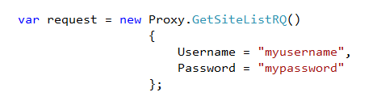
Recommendations
- Always host it on SSL as clear-text password is sent as part of request.
- Avoid using it on production environment as some methods may be time consuming.
Common Parameters
Common Request Parameters
Every request to the service must contain authentication information described below.
Name | Type | Description
------------------------------------------------------------------------------------------------
Username | String | Templar username for the deployment
Password | String | Password for the above specified username
Common Response Parameters
Every response from the service contains following information related to the status of operation performed.
Name | Type | Description
------------------------------------------------------------------------------------------------
IsSuccessful | Bool | Is true if operation was performed successfully, else false.
Message | String | Contains message corresponding to status of the operation performed.
ResponseCode | Int | Response code corresponding to the status of service call.
Common Error Messages
Code | Message | Description
------------------------------------------------------------------------------------------------
401 | Authentication failed | Server was not able to authenticate using
username and password provided.
500 | Error occurred while | Some unexpected error occurred while performing the
processing your operation on server. Check server exception logs for
request further details.
Service Methods
-
GetArtifactList
Returns list of entities of requested type from specified server. In case no server was specified, entities are fetched from current server.
Can be used to fetch list of following type of entities:
- Site
- Template
- Widget
- Global culture
- Global theme
Request Object Structure: GetArtifactListRQ
Along with common request parameters described above, following information is also expected by the service.
Name | Type | Description
------------------------------------------------------------------------------------------------
Server | EnvironmentInfo | Deployment details from where to fetch the list of entities.
Passing null will fetch list from current server.
EntityType | Enum | Type of entity list to be fetched. Allowed types are Site,
Templates, Global cultures, Global themes and Widgets.
Response Object Structure: GetArtifactListRS
Along with common response parameters, following information is also returned as a part of response object.
Name | Type | Description
------------------------------------------------------------------------------------------------
Entities | List<EntityMetaData> | List containing meta data of the entities.
Sample Request
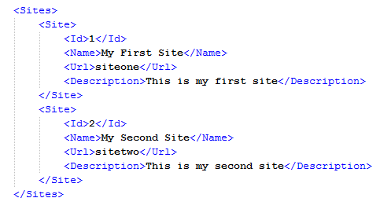
Sample Response
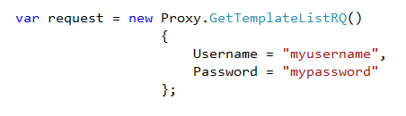
-
GetArtifactDetail
Returns the details of entity corresponding to metadata provided from specified server. In case no server was specified, entity details are fetched from current server.
Can be used to fetch detail of following type of entities:
- Site
- Template
- Widget
- Global culture
- Global theme
Request Object Structure: GetArtifactDetailRQ
Along with common request parameters described above, following information is also expected by the service.
Name | Type | Description
------------------------------------------------------------------------------------------------
Server | EnvironmentInfo | Deployment details from where to fetch the list of entities.
Passing null will fetch details from current server.
Entity | EntityMetaData | Metadata for entity whose details are to be fetched.
Only Type and Id are used to identify an entity.
Response Object Structure: GetArtifactDetailRS
Along with common response parameters, following information is also returned as a part of response object.
Name | Type | Description
------------------------------------------------------------------------------------------------
Entity | Entity | Object containing the detailed information of the requested
entity.
Sample Request
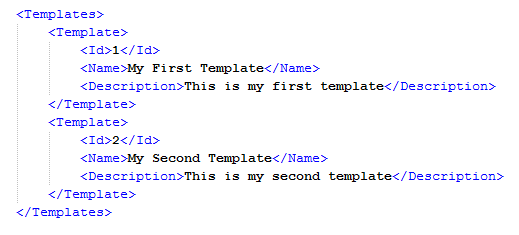
Sample Response
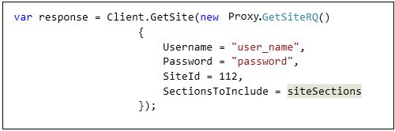
-
GetArtifactDiff
Returns list of differences between two entities of same type (site and template can be used to view diff with one another) corresponding to requested details. In case no server was specified for entity to be updated from, entity is fetched from current server.
Can be used to fetch list of following type of entities:
- Site
- Template
- Widget
- Global culture
- Global theme
Request Object Structure: GetArtifactDiffRQ
Along with common request parameters described above, following information is also expected by the service.
Name | Type | Description
------------------------------------------------------------------------------------------------
Server | EnvironmentInfo | Deployment details from where to fetch the entity to be
updated. Passing null will fetch details from current
server.
EntityToBeUpdated | EntityMetaData | Metadata for entity which is to be updated. Only Type
and Id are used to identify an entity.
Entity is fetched from current server.
EntityToUpdateFrom | EntityMetaData | Metadata for entity from which other entity is to be
updated. Only Type and Id are used to identify an entity.
Entity is fetched from specified server.
Response Object Structure: GetArtifactDiffRS
Along with common response parameters, following information is also returned as a part of response object.
Name | Type | Description
------------------------------------------------------------------------------------------------
DiffList | List<DiffEntityCategory> | Contains diff status of various details of entities.
DiffStatus | DiffEntityStatus | Contains aggregated status of all the entity details.
Can be either SAME or DIFFERENT.
Sample Request

Sample Response
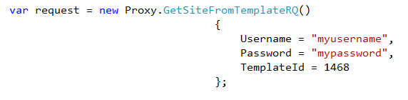
-
UpdateArtifact
Updates entity specified to be updated at current server from entity specified to update from using specified server. Either set the CompleteUpdate property in entity detail to update complete entity or provide specific details to be updated.
Can be used to update following type of entities:
- Site
- Global culture
- Global theme
Request Object Structure: UpdateArtifactRQ
Along with common request parameters described above, following information is also expected by the service.
Name | Type | Description
------------------------------------------------------------------------------------------------
Server | EnvironmentInfo | Deployment details from where to fetch the entity to be
updated. Passing null will fetch details from current
server.
EntityToBeUpdated | EntityMetaData | Metadata for entity which is to be updated.
Only Type and Id are used to identify an entity.
EntityToUpdateFrom | Entity | Details of entity from which other entity is to be
updated.
Response Object Structure: UpdateArtifactRS
Only common response parameters containing information about the update operation are returned as part of response from server.
Sample Request
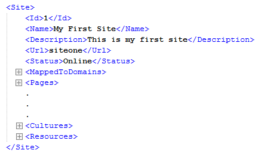
Sample Response
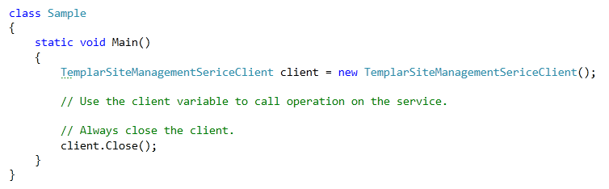
-
CreateArtifact
Create an entity on current server using provided details. Can be used to create following type of entities:
- Site
- Template
- Global culture
- Global theme
- Widget
Different request objects have to be used for creating different types of entities. Along with common request parameters described above, following information is also expected by the service.
Request Object Structure: CreateSiteRQ
Name | Type | Description
------------------------------------------------------------------------------------------------
Name | String | Name of the site to be created.
Description | String | Description of the site to be created.
TemplateId | int? | Id of the template from which the site is to be created.
Leave blank while creating empty site.
Request Object Structure: CreateTemplateRQ
Name | Type | Description
------------------------------------------------------------------------------------------------
Name | String | Name of the template to be created.
Description | String | Description of the template to be created.
SiteId | Int? | Id of the site from which the template is to be created.
ZipContent | Byte[] | Contents of zip in case of creating template from zip.
Request Object Structure: CreateGlobalCultureRQ
Name | Type | Description
------------------------------------------------------------------------------------------------
CountryCode | String | 2 letter country code for the culture.
LangaugeCode | String | 2 letter language code for the culture.
ZipContent | Byte[] | Contents of zip in case of creating culture from zip.
Request Object Structure: CreateGlobalThemeRQ
Name | Type | Description
------------------------------------------------------------------------------------------------
Name | String | Name of the theme to be created.
Description | String | Description of the theme to be created.
ZipContent | Byte[] | Contents of zip in case of creating theme from zip.
Request Object Structure: CreateWidgetRQ
Name | Type | Description
------------------------------------------------------------------------------------------------
Name | String | Name of widget to be created.
Description | String | Description of widget to be created.
Url | String | Url of the widget.
Icon | String | Relative image file url to be used as icon for the widget.
State | String | Default state to be saved with the widget.
CultureZipContent | Byte[] | Contents of zip in case of creating widget cultures from zip.
Response Object Structure: CreateArtifactRS
Along with common response parameters, following information is also returned as a part of response object.
Name | Type | Description
------------------------------------------------------------------------------------------------
ArtifactId | Long | Id of the newly created artifact.
Sample Request
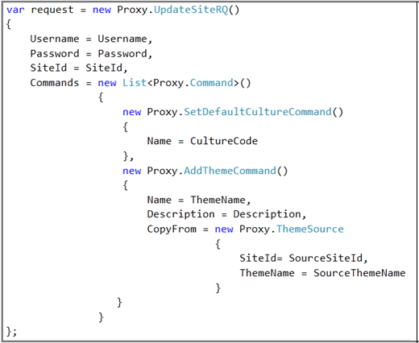
Sample Response
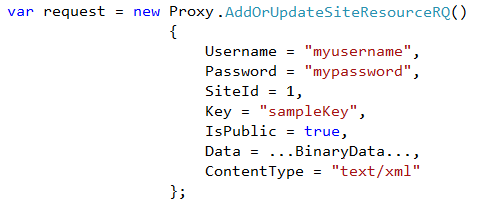
-
PublishArtifact
Publish entities on current server using artifact id provided in request. Following types of entity are supported:
- Site – by passing site id
- Global theme – by passing theme id
- Global culture – by passing culture instance id of global culture
- Widget culture – by passing widget id corresponding to the cultures
Request Object Structure: PublishArtifactRQ
Along with common request parameters described above, following information is also expected by the service.
Name | Type | Description
------------------------------------------------------------------------------------------------
Type | Enum | Type of the artifact to be published.
ArtifactId | Long | Above described id corresponding to the artifact to be published.
Response Object Structure: PublishArtifactRS
Only common response parameters containing information about the update operation are returned as part of response from server.
Sample Request
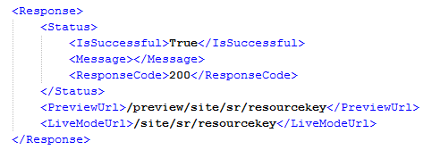
Sample Response
-
DownloadArtifact
Download entities as zip from current server. Following types of entity are supported:
- Template – by passing template id
- Global culture – by passing culture instance id of global culture
- Global theme – by passing global theme id
- Widget culture – by passing corresponding widget id.
Request Object Structure: DownloadArtifactRQ
Along with common request parameters described above, following information is also expected by the service.
Name | Type | Description
------------------------------------------------------------------------------------------------
Entity | EntityMetaData | Metadata of the entity to be downloaded.
Response Object Structure: DownloadArtifactRS
Along with common response parameters, following information is also returned as a part of response object.
Name | Type | Description
------------------------------------------------------------------------------------------------
Data | Byte[] | Byte array containing contents of the specified entity in zip format.
Sample Request
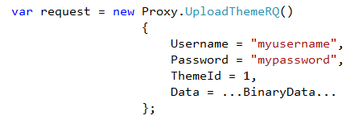
-
DeleteArtifact
This can be used to delete artifact at current server. Following types of entity are supported:
- Site – by passing site id
- Template – by passing template id
- Global culture – by passing culture instance id of global culture
- Global theme – by passing global theme id
- Widget culture – by passing corresponding widget id.
Request Object Structure: DeleteArtifactRQ
Along with common request parameters described above, following information is also expected by the service.
Name | Type | Description
------------------------------------------------------------------------------------------------
Type | Enum | Type of the entity to be deleted.
ArtifactId | Long | Id of the artifact to be deleted.
Response Object Structure: DeleteArtifactRS
Only common response parameters containing information about the delete operation are returned as part of response from server.
Sample Request
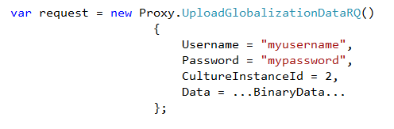
Sample Response
-
SyncWidgetList
This can be used to sync and update widgets at current server with the server information provided in EnvironmentInfo object of request.
Request Object Structure: SyncWidgetListRQ
Along with common request parameters described above, following information is also expected by the service.
Name | Type | Description
------------------------------------------------------------------------------------------------
Server | EnvironmentInfo | Information about the Server like Server location, username
and password to connect.
Widgets | List<WidgetInfo> | List of the widget information contains Name and Id
WidgetDump | Byte[] | Array of byte of widget dump
Response Object Structure: SyncWidgetListRS
Only common response parameters containing information about the sync operation are returned as part of response from server.
Sample Request
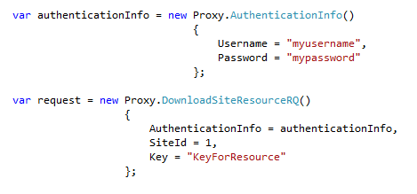
Sample Response
Detailed Object Model
AuthenticationInfo
Name | Type | Description
------------------------------------------------------------------------------------------------
Username | String | Templar username for the deployment
Password | String | Password for the above specified username
Culture
Name | Type | Description
------------------------------------------------------------------------------------------------
Id | Long | Id of the culture
CultureCode | String | Culture code in format LC-CC, where LC is corresponding
language code and CC is country code.
CountryCode | String | 2 letter country code. Can be empty.
CountryName | String | Full country name.
LanguageCode | String | 2 letter language code. Cannot be empty.
LanguageName | String | Full language name.
Resources | List<CultureResource> | List of resources associated with the culture
ResourcesHash | String | Combined hash of all the resources associated with the
culture.
ResourceCount | Long | Count of the resources associated with the culture
Contents | List<CultureContent> | List of contents associated with the culture
ContentsHash | String | Combined hash of all the content associated with the culture
ContentCount | Long | Count of the contents associated with the culture
Setting | CultureSetting | Object containing details of culture setting for current
culture
CultureContent
Name | Type | Description
------------------------------------------------------------------------------------------------
Id | Long | If of the content
Key | String | Key for the content
BinaryData | Byte[] | Binary data for the content
ContentType | String | Content type fetched from the uploaded content file
CultureResource
Name | Type | Description
------------------------------------------------------------------------------------------------
Id | Long | Id of the resource
Key | String | Key for the resource
Value | String | Value for the resource
Comment | String | Comment specified with the resource
TranslationSetting | String | Translation setting for the resource
CultureSetting
Name | Type | Description
------------------------------------------------------------------------------------------------
DateTimeFormat | DateTimeFormat | Settings for culture corresponding to date and time
NumberFormat | NumberFormat | Settings for culture corresponding to number formatting
and currency
TextDirection | String | Direction for displaying text in current culture, can be either
left to right or right to left
MetricSystem | String | Metric system to be used with current culture
Yes | String | Text representing ‘Yes’ in current culture
No | String | Text representing ‘No’ in current culture
DateTimeFormat
Name | Type | Description
------------------------------------------------------------------------------------------------
ShortDateFormat | String | Format to be used while displaying short date
LongDateFormat | String | Format to be used while displaying long date
TimeFormat | String | Format to be used while displaying time
DateSeparator | String | Separator to be used while displaying date
TimeSeparator | String | Separator to be used while displaying time
AMDesignator | String | Text representation of ‘am’ in current culture
PMDesignator | String | Text representation of ‘pm’ in current culture
Day | List<DayName> | List of day names corresponding to current culture
Month | List<MonthName> | List of month names corresponding to current culture
DayName
Name | Type | Description
------------------------------------------------------------------------------------------------
AbbreviatedName | String | Abbreviated name of the day
FullName | String | Full name of the day
Entity
Name | Type | Description
------------------------------------------------------------------------------------------------
Site | Site | Contains details of site entity
Template | | Template Contains details of template entity
GlobalCulture | Culture | Contains details of global culture entity
GlobalTheme | Theme | Contains details of global theme entity
Widget | Widget | Contains details of widget entity
CompleteUpdate | Bool | Used while updating an entity. If set to true,
complete entity is updated from specified entity.
EntityMetaData
Name | Type | Description
------------------------------------------------------------------------------------------------
Type | Enum | Type of entity
Id | Long | Id for the entity
Name | String | Name of entity
EnvironmentInfo
Name | Type | Description
------------------------------------------------------------------------------------------------
Location | String | URL of home page of Templar deployment
Username | String | Templar username for the deployment
Password | String | Password for the above specified username
ErrorPage
Name | Type | Description
------------------------------------------------------------------------------------------------
StatusCode | Int | Status code for the error page e.g. 404, 500
Redirect | String | Relative url of the page to be redirected to in case of
corresponding error code occurs
EventInfoMapping
Name | Type | Description
------------------------------------------------------------------------------------------------
SourceKey | String | Key in source event
MappedKey | String | Key in destination event
DefaultValue | String | Default value to be used in case none is provided
EventMapping
Name | Type | Description
------------------------------------------------------------------------------------------------
Type | String | Type of event
SourceWidgetId | Long | Id of widget raising the event
SourceWidgetName | String | Name of widget raising the event
SourceWidgetEventName | String | Name of the event in widget raising the event
DestinationWidgetId | Long | Id of widget listening the event
DestinationWidgetName | String | Name of widget listening the event
DestinationWidgetEventName | String | Name of the event in widget listening the event
EventInfoMappings | List<EventInfoMapping>| List of parameter mappings between the two events
KeyValuePair
Name | Type | Description
------------------------------------------------------------------------------------------------
Key | String | Contains key
Value | String | Contains value
MonthName
Name | Type | Description
------------------------------------------------------------------------------------------------
AbbreviatedName | String | Abbreviated name of the month
FullName | String | Full name of the month
NumberFormat
Name | Type | Description
------------------------------------------------------------------------------------------------
DecimalDigits | Int | Number of decimal digits to be displayed
DigitGrouping | Int[] | Digit grouping format for current culture
DecimalSymbol | String | Decimal symbol to be used in current culture
GroupSeparator | String | Group separator to be used in current culture
CurrencySymbol | String | Current symbol corresponding to current culture
CurrencyCode | String | Current code corresponding to current culture
PositiveSymbol | String | Symbol to denote positive number in current culture
NegativeSymbol | String | Symbol to denote negative number in current culture
PositiveCurrencyFormat | String | Format to be used while displaying positive currency in current
culture
NegativeNumberFormat | String | Format to be used while displaying negative number in current
culture
NegativeCurrencyFormat | String | Format to be used while displaying negative currency in current
culture
Page
Name | Type | Description
------------------------------------------------------------------------------------------------
Id | Long | Id of the page
Name | String | Name of the page
Title | String | Title of the page
RelativeUrl | String | Url of the page
LayoutType | Int | Layout type of the page
PageAlign | Int | Alignment of the page
IsDirty | Bool | Is true if changes are made in the page after last publish
IsLogin | Bool | Is true if the page is set as login page for site
IsMaster | Bool | Is true for master pages
MasterPageId | Long | Contains id of master page in case one exists
State | String | State of the page
ConnectionType | String | Connection type specified for the page
WidgetInstances | List<WidgetInstance> | List of widget instances present on the page
PageData | List<KeyValuePair> | List of page data associated with the page
MetaData | List<KeyValuePair> | List of meta data associated with the page
EventMappings | List<EventMapping> | List of event mappings associated with the widget instances
present on the page
IsAuthenticationRequired | Bool | Is true if page requires user to logged in
PageLayouts
Code | Layout
------------------------------------------------------------------------------------------------
0 | 3 – Panel
1 | Small Left Panel
2 | Small Right Panel
3 | Small Side Panels
4 | Single Panel
Site
Name | Type | Description
------------------------------------------------------------------------------------------------
Id | Long | Id of the site
Name | String | Name of the site
Url | String | Url of the site
MappedToDomain | String | Vanity urls specified for the site
Description | String | Description of the site
Status | String | Current status of the site, can be offline or online
DefaultPage | Long | Id of default page for the site
DefaultPageUrl | String | Url of default page for the site
MetaData | List<KeyValuePair>| List of meta data specified with the site
Pages | List<Page> | List of pages in current site
Themes | List<Theme> | List of themes for current site
CurrentThemeName| String | Name of theme currently used by the site
HeaderCode | String | Code to be included on header of every page
FooterCode | String | Code to be included on footer of every page
Cultures | List<Culture> | List of cultures defined at site level
Resources | List<SiteResource>| List of site level resources defined
CultureSelection| String | Culture selection to be used during a page request,
can be auto-detect or enforced
DefaultCultureCode | String | Code of culture currently set as default for the site
InheritedCultures | List<Culture> | List of global cultures inherited by the site
DefaultPageLayout | String | Default layout of pages in site
EnvData | List<SiteSettingsGroup> | List of groups containing site level environment data
CustomErrorPages| List<ErrorPage> | List of custom error pages defined by the site
SiteResource
Name | Type | Description
------------------------------------------------------------------------------------------------
Id | Long | Id of the resource
Key | String | Key for the resource
ContentType | String | Content type of the resource
IsPublic | Bool | Is true if resource can be accessed publicly using url
SiteSettingsGroup
Name | Type | Description
------------------------------------------------------------------------------------------------
Name | String | Name of group in site settings
Settings | List<KeyValuePair>| List of various groups in site settings
Template
Name | Type | Description
------------------------------------------------------------------------------------------------
Id | Long | Id of the template
Name | String | Name of the site in template
Url | String | Url of the site in template
MappedToDomain | String | Vanity urls specified for the site in template
Description | String | Description of the site in template
Status | String | Current status of the site, can be offline or online
DefaultPage | Long | Id of default page for the site in template
DefaultPageUrl | String | Url of default page for the site in template
MetaData | List<KeyValuePair>| List of meta data specified with the site in template
Pages | List<Page> | List of pages in current site in template
Themes | List<Theme> | List of themes for current site in template
CurrentThemeName| String | Name of theme currently used by the site in template
HeaderCode | String | Code to be included on header of every page
FooterCode | String | Code to be included on footer of every page
Cultures | List<Culture> | List of cultures defined at site level in template
CustomErrorPages| List<ErrorPage> | List of custom error pages defined by the site in template
Resources | List<SiteResource>| List of site level resources defined in template
DefaultPageLayout | String | Default layout of pages in site in template
DefaultCultureCode | String | Code of culture currently set as default for the
site in template
CultureSelection | String | Culture selection to be used during a page request,
can be auto-detect or enforced
InheritedCultures | List<Culture> | List of global cultures inherited by the site in template
EnvData | List<SiteSettingsGroup> | List of groups containing site level environment data
Theme
Name | Type | Description
------------------------------------------------------------------------------------------------
Id | Long | Id of the theme
Name | String | Name of the theme
Description | String | Description of the theme
Path | String | Path of the theme
Widget
Name | Type | Description
------------------------------------------------------------------------------------------------
Id | Long | Id of the widget
Name | String | Name of the widget
Description | String | Description of the widget
Url | String | Url corresponding to the widget
Icon | String | Path for icon file for the widget
State | String | State for the widget
Cultures | List<Culture> | List of cultures defined for the widget
WidgetInstance
Name | Type | Description
------------------------------------------------------------------------------------------------
Id | Long | Id of widget instance
BaseWidget | Widget | Object containing details of base widget
Title | String | Title of widget instance
Row | Int | Row number of widget instance
Column | Int | Column number of widget instance
Visible | Bool | Is true if widget is visible
State | String | State corresponding to the widget instance
WidgetInfo
Name | Type | Description
------------------------------------------------------------------------------------------------
Name | String | Name of the widget
Id | Long | Id of widget